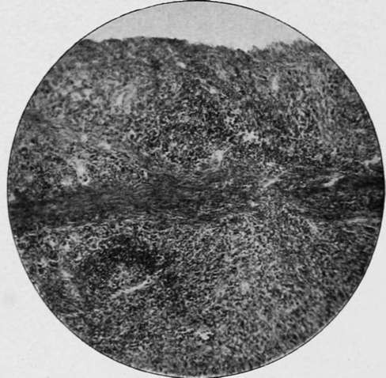

Secondary Carcinoma Of The Stomach. Continued
Description
This section is from the book "Cancer And Other Tumours Of The Stomach", by Samuel Fenwick. Also available from Amazon: Cancer and other tumours of the stomach.
Secondary Carcinoma Of The Stomach. Continued
The earliest signs of a departure from the normal consist of an active proliferation of the epithelium of a small group of glands, which leads to distension of the tubules with cells of various shapes and sizes, obliteration of their lumina, and a marked alteration of their outlines. At the same time the capillaries which ramify in the deeper portions of the mucous membrane become engorged with blood, and exudation of leucocytes takes place, accompanied by proliferation of the corpuscles of the connective tissue and enlargement of the solitary lymphatic follicles. Many of the newly formed cells exhibit particles of brownish black pigment, and the oxyntic cells of the neighbouring glands are often affected in a similar manner. The epithelial overgrowth soon gives rise to elongation, twisting, and distortion of the tubules, which causes them to appear branched or racemose; while the ducts become choked with debris and their columnar cells filled with mucus. Up to this period the morbid process closely resembles an adenoma; but it now displays its malignant character by the rupture of the basement membranes of the affected glands and escape of the epithelium, which continues to penetrate the surrounding connective tissue in the form of branching columns similar in appearance to the peptic glands, but devoid of a membrana propria. This extension chiefly takes place through the lymphatic spaces; but many of the cells become detached, and wander in an amoeboid manner through the tissues, where they produce new foci of disease at a considerable distance from its primary seat. Within a short time the muscularis mucosae becomes involved, and its fibres are separated and compressed by an invasion of the intermuscular lymphatic channels. After reaching the submucosa the columns of cells continue to invade the lymph-spaces in all directions, while the connectivetissue elements actively proliferate, and, being reinforced by an inflammatory exudation of small round cells, become converted into a fibrous reticulum or stroma, the amount of which is usually in inverse proportion to the number of cells. When the latter are in excess, the meshes or alveoli of the stroma are of considerable size and closely set; but when the fibrous tissue predominates the spaces are usually small and scanty, and may only appear as fissures containing irregular groups or rows of cells. The epithelium itself varies considerably in character, in some cases consisting of quadrilateral cells arranged in layers, the deepest of which may be distinctly columnar, while in others the alveoli are stuffed with cells, whose mutual pressure causes them to appear round, ovoid, or polyhedral. Each cell contains one or more nuclei, which often exhibit atypical mitoses, and occasionally the cell-enclosures or ' parasites ' described by Soudakewitsch and Ruffer may be detected in them. Multiplication takes place both by budding and by karyokinesis. The smaller vessels of the submucosa are also affected by a round-cell infiltration of their outer coats and a hyperplasia of their intima, while, according to Cornil and Ranvier, they often present minute aneurysmal dilatations. These changes are apt to result in the formation of thrombi in the veins, with subsequent invasion of the clot by the epithelial cells which have penetrated the vascular wall. Although the loose structure of the submucous coat of the stomach offers every facility to the spread of the disease by continuity, the marked preference exhibited to lymphatic invasion leads to an early dissemination of the cells through the surrounding tissues, and especially in the direction of the serosa. At first thin rows of cells are observed in the intermuscular septa, where they provoke an inflammatory thickening of the connective tissue and induce compensatory hypertrophy of the muscular fibres. Thence they extend towards the peritoneum, and either form a thick layer beneath the serous membrane or numerous isolated groups in the lymphatic vessels. Subsequently cells appear between the individual fibres of the muscular coat, while the ever-increasing infiltration of the septa compresses the contractile tissue and eventually leads to its fatty degeneration and atrophy.
The abnormal stimulation of the tissues excited by the epithelial invasion results in the formation of new blood-vessels by a process of budding from the pre-existing vascular channels. This increased vascularisation exerts an important influence upon the subsequent course of the disease, for although at first it is conducive to rapid growth, the newly formed vessels are very apt to rupture and to give rise to hemorrhagic infiltration and sloughing of the tumour. In every instance, also, the gradual obliteration of the original vessels due to their compression or thrombosis diminishes the nutrition of the growth, and leads to degeneration of its substance. So remarkable, indeed, is this tendency to retrogressive metamorphosis that it may be said that carcinomatous tissue is characterised from the outset by degeneration. In most cases fatty changes develop first in the cells situated in the centres of the alveoli; but in others the stroma is converted into colloid material, and the cells subsequently undergo myxomatous degeneration. These latter changes are most frequently encountered in the cylindrical-celled variety of the disease. At first the mucous membrane around the growth is affected by a chronic form of inflammation, which produces considerable thickening of the interglandular connective tissue and is accompanied by catarrhal changes in the peptic cells. The contraction of this newly formed tissue compresses and distorts the glands, and often gives rise to small retention cysts. In the case of a slow-growing hard carcinoma, this gastritis may proceed to atrophy of the secretory structures before they are actually invaded by the disease ; but in the softer forms the atypical epithelium soon penetrates both the tubules and the tissue that separates them, and completely destroys the mucous membrane at a comparatively early period.
Scirrhous carcinoma is characterised by the presence of an excess of stroma and a marked deficiency of the cellular elements. All the coats of the stomach are much thickened, and the submucosa consists almost entirely of greyish-white coarse, fibrillated cicatricial tissue, which here and there may exhibit a small hollow or fissure containing a few epithelial cells. The muscular layer is much hypertrophied, and its fibres are enclosed in a meshwork of fibrous tissue produced by thickening of the intermuscular septa. There is also a notable induration of the subserous connective tissue, while the mucous membrane shows signs of chronic interstitial gastritis.
Fig. 20.-Scirrhous carcinoma of the stomach ( x 100).
Fig. 21.-Scirrhous carcinoma of the stomach ( x 430).
Fig. 22.-Cylinder-celled carcinoma of the stomach ( x 100).
Medullary carcinoma differs from the preceding in the excessive number of cells it contains and the relative deficiency of stroma. The alveoli are large and numerous, and filled with cells of a round or oval shape. Infection of the deeper tissues occurs through the lymphatic vessels, and rows of cells may be observed in the intermuscular septa and immediately beneath the serous membrane even before the growth in the submucosa has made any substantial progress. The mucous membrane is also invaded and destroyed at a comparatively early period.
Continue to: